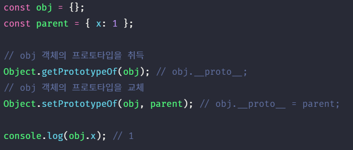

자바스크립트는 명령형, 함수형, 프로토타입 기반 객체지향 프로그래밍을 지원하는 멀티 패러다임 프로그래밍 언어다.
간혹 C++, Java와 같은 클래스 기반 객체지향 프로그래밍 언어의 특징인 클래스와 상속, 캡슐화를 위한 키워드 public, private, protected 등이 없어서 자바스크립트는 객체지향 언어가 아니라고 오해(자바스크립트는 가장 많은 오해를 받는 언어다)하는 경우도 있다. 하지만 자바스크립트는 클래스 기반 객체지향 프로그래밍 언어보다 효율적이며 더 강력한 객체지향 프로그래밍 능력을 지니고 있는 프로토타입 기반의 객체지향 프로그래밍 언어이다.
- 클래스
- ES6에서 클래스가 새롭게 도입되었다. 하지만 ES6의 클래스가 기존의 프로토타입 기반 객체지향 모델을 폐지하고 새로운 객체지향 모델을 제공하는 것은 아니다. 사실 클래스도 함수이며 기존 프로토타입 기반 패턴의 문법적 설탕이라고 볼 수 있다. 하지만 클래스와 생성자 함수가 모두 프로토타입 기반의 인스턴스를 생성하지만 정확히 동일하게 동작하지는 않는다. 클래스는 생성자 함수보다 엄격하며 클래스는 생성자 함수에서는 제공하지 않는 기능도 제공한다. 따라서 클래스를 프로토타입 기반 객체 생성 패턴의 단순한 문법적 설탕이라고 보기 보다는 새로운 객체 생성 메카니즘으로 보는 것이 보다 합당하다고 할 수 있다. 클래스에 대해서는 25장에서 자세히 살펴보자!
자바스크립트는 객체 기반의 프로그래밍 언어이며 자바스크립트를 이루고 있는 거의 “모든 것”이 객체이다. 원시 타입의 값을 제외한 나머지 값들(함수, 배열, 정규표현식 등)은 모두 객체이다.
1. 객체지향 프로그래밍 #
객체지향 프로그래밍은 프로그램을 명령어 또는 함수의 목록으로 보는 전통적인 명령형 프로그래밍의 절차지향적 관점에서 벗어나 여러 개의 독립적 단위, 즉 객체들의 집합으로 프로그램을 표현하려는 프로그래밍 패러다임을 말한다.
객체지향 프로그래밍은 실세계의 실체(사물이나 개념)를 인식하는 철학적 사고를 프로그래밍에 접목하려는 시도에서 시작한다. 실체는 특징이나 성질을 나타내는 속성을 가지고 있고, 이를 통해 실체를 인식하거나 구별할 수 있다.
예를 들어, 사람은 이름, 주소, 성별, 나이, 신장, 체중, 학력, 성격, 직업 등 다양한 속성을 갖는다. 이때 “이름이 아무개이고 성별은 여성이며 나이는 20세인 사람”과 같이 속성을 구체적으로 표현하면 특정한 사람을 다른 사람과 구별하여 인식할 수 있다.
이러한 방식을 프로그래밍에 접목시켜보자. 사람에게는 다양한 속성이 있으나 우리가 구현하려는 프로그램에서는 사람의 “이름”, “주소”라는 속성에만 관심이 있다고 가정하자. 이처럼 다양한 속성 중에서 프로그램에 필요한 속성만을 간추려 내어 표현하는 것을 추상화라 한다.
“이름”과 “주소”이라는 속성을 갖는 person이라는 객체를 자바스크립트로 표현해 보면 아래와 같다.

이때 프로그래머는 이름과 주소 속성으로 표현된 객체인 person을 다른 객체와 구별하여 인식할 수 있다. 이처럼 속성을 통해 여러 개의 값을 하나의 단위로 구성한 복합적인 자료 구조를 객체라 하며 객체 지향 프로그래밍은 독립적인 객체의 집합으로 프로그램을 표현하려는 프로그래밍 패러다임이다.
이번에는 원이라는 개념을 객체로 만들어보자. 원에는 반지름이라는 속성이 있다. 이 반지름을 가지고 원의 지름, 둘레, 넓이를 구할 수 있다. 이때 반지름은 원의 상태를 나타내는 데이터이며 원의 지름, 둘레, 넓이를 구하는 것은 동작이다.
이처럼 객체지향 프로그래밍은 객체의 상태(state)를 나타내는 데이터와 상태 데이터를 조작할 수 있는 동작(behavior)을 하나의 논리적인 단위로 묶어 생각한다. 따라서 객체는 상태 데이터와 동작을 하나의 논리적인 단위로 묶은 복합적인 자료 구조라고 할 수 있다. 객체의 상태 데이터를 프로퍼티(property), 동작을 메소드(method)라 부른다.
각각의 객체는 고유의 기능을 갖는 독립적인 부품으로 볼 수 있지만 자신의 고유한 기능을 수행하면서 다른 객체와 관계성을 갖을 수 있다. 다른 객체와 메시지를 주고 받거나 데이터를 처리할 수도 있다. 또는 다른 객체의 상태 데이터나 동작을 상속받아 사용하기도 한다.
2. 상속과 프로토타입 #
상속은 객체지향 프로그래밍의 핵심 개념으로 어떤 객체의 프로퍼티 또는 메소드를 다른 객체가 상속받아 그대로 사용할 수 있는 것을 말한다.
자바스크립트는 프로토타입을 기반으로 상속을 구현하여 불필요한 중복을 제거한다. 중복을 제거하는 방법은 기존의 코드를 적극적으로 재사용하는 것이다. 코드 재사용은 개발 비용을 현저히 줄일 수 있는 잠재력이 있으므로 매우 중요하다. 아래 예제를 확인해보자.

생성자 함수는 동일한 프로퍼티(메소드 포함) 구조를 갖는 객체를 여러 개 생성할 때 유용하다. 하지만 위 예제의 생성자 함수는 문제가 있다.
Circle 생성자 함수가 생성하는 모든 객체(인스턴스)는 radius 프로퍼티와 getArea 메소드를 갖는다. radius 프로퍼티 값은 일반적으로 인스턴스마다 다르다.(같은 상태를 갖는 여러 개의 인스턴스가 필요하다면 radius 프로퍼티 값이 같을 수도 있다.) 하지만 getArea 메소드는 모든 인스턴스가 동일한 내용의 메소드를 사용하므로 하나만 생성하여 모든 인스턴스가 공유하는 것이 바람직하다. 그런데 Circle 생성자 함수는 인스턴스를 생성할 때마다 getArea 메소드를 중복 생성하고 모든 인스턴스가 중복 소유한다.

이처럼 동일한 생성자 함수에 의해 생성된 모든 인스턴스가 동일한 메소드를 중복 소유하는 것은 메모리를 불필요하게 낭비한다. 또한 인스턴스를 생성할 때마다 메소드를 생성하므로 퍼포먼스에도 악영향을 준다. 만약 10개의 인스턴스를 생성하면 내용이 동일한 메소드도 10개 생성된다.
상속을 통해 불필요한 중복을 제거해 보자. 자바스크립트는 프로토타입을 기반으로 상속을 구현한다.


Circle 생성자 함수가 생성한 모든 인스턴스는 자신의 프로토타입, 즉 상위(부모) 객체 역할을 하는 Circle.prototype의 모든 프로퍼티와 메소드를 상속 받는다.
getArea 메소드는 단 하나만 생성되어 프로토타입인 Circle.prototype의 메소드로 할당되어 있다. 따라서 Circle 생성자 함수가 생성하는 모든 인스턴스는 getArea 메소드를 상속받아 사용할 수 있다. 즉, 자신의 상태를 나타내는 radius 프로퍼티만을 개별적으로 소유하고 내용이 동일한 메소드는 상속을 통해 공유하여 사용하는 것이다.
상속은 코드의 재사용이란 관점에서 매우 유용하다. 생성자 함수가 생성할 모든 인스턴스가 공통적으로 사용할 프로퍼티나 메소드를 프로토타입에 미리 구현에 놓으면 생성자 함수가 생성할 모든 인스턴스는 별도의 구현없이 상위(부모) 객체인 프로토타입의 자산을 공유하여 사용할 수 있다.
3. 프로토타입 객체 #
프로토타입 객체(또는 줄여서 프로토타입)란 객체 지향 프로그래밍의 근간을 이루는 객체간 상속을 구현하기 위해 사용된다. 프로토타입은 어떤 객체의 상위(부모) 객체의 역할을 하는 객체로서 다른 객체에 공유 프로퍼티(메소드 포함)를 제공한다. 프로토타입을 상속받은 하위(자식) 객체는 상위 객체의 프로퍼티를 자신의 프로퍼티처럼 자유롭게 사용할 수 있다.
모든 객체는 [[Prototype]]이라는 내부 슬롯을 가지며 이 내부 슬롯의 값은 프로토타입의 참조(null인 경우도 있다)이다. [[Prototype]]에 저장되는 프로토타입은 객체 생성 방식에 의해 결정된다. 즉, 객체가 생성될 때 객체 생성 방식에 따라 프로토타입이 결정되고 [[Prototype]]에 저장된다.
예를 들어, 객체 리터럴에 의해 생성된 객체의 프로토타입은 Object.prototype이고 생성자 함수에 의해 생성된 객체의 프로토타입은 생성자 함수의 prototype 프로퍼티에 바인딩되어 있는 객체이다.
모든 객체는 하나의 프로토타입을 갖는다.([[Prototype]] 내부 슬롯의 값이 null인 객체는 프로토타입이 없다.) 그리고 모든 프로토타입은 생성자 함수와 연결되어 있다. 즉, 객체와 프로토타입과 생성자 함수는 서로 연결되어 있다.

[[Prototype]] 내부 슬롯에는 직접 접근할 수 없지만, 위 그림처럼 객체는 __proto__ 접근자 프로퍼티를 통해 자신의 프로토타입, 즉 자신의 [[Prototype]] 내부 슬롯이 가리키는 프로토타입에 간접적으로 접근할 수 있다. 그리고 프로토타입은 자신의 constructor 프로퍼티를 통해 생성자 함수에 접근할 수 있고, 생성자 함수는 자신의 prototype 프로퍼티를 통해 프로토타입에 접근할 수 있다.
3.1. __proto__ 접근자 프로퍼티 #
모든 객체는 __proto__ 접근자 프로퍼티를 통해 자신의 프로토타입, 즉 [[Prototype]] 내부 슬롯에 간접적으로 접근할 수 있다. 아래 예제를 크롬 브라우저의 콘솔에서 출력해보자.
const person = {name: 'Lee'};

위 그림의 빨간 박스로 표시한 것이 person 객체의 프로토타입인 Object.prototype이다. 이는 __proto__ 접근자 프로퍼티를 통해 person 객체의 [[Prototype]] 내부 슬롯이 가리키는 객체인 Object.prototype에 접근한 결과를 크롬 브라우저가 콘솔에 표시한 것이다. 이처럼 모든 객체는 __proto__ 접근자 프로퍼티를 통해 프로토타입을 가리키는 [[Prototype]] 내부 슬롯에 접근할 수 있다.
__proto__는 접근자 프로퍼티이다.내부 슬롯은 프로퍼티가 아니다. 따라서 자바스크립트는 원칙적으로 내부 슬롯과 내부 메소드에 직접적으로 접근하거나 호출할 수 있는 방법을 제공하지 않는다. 단, 일부 내부 슬롯과 내부 메소드에 한하여 간접적으로 접근할 수 있는 수단을 제공하기는 한다. [[Prototype]] 내부 슬롯에도 직접 접근할 수 없으며 __proto__ 접근자 프로퍼티를 통해 간접적으로 [[Prototype]] 내부 슬롯의 값, 즉 프로토타입에 접근할 수 있다.
접근자 프로퍼티는 자체적으로는 값을 갖지 않고 다른 데이터 프로퍼티의 값을 읽거나 저장할 때 사용하는 접근자 함수로 구성된 프로퍼티다.

Object.prototype의 접근자 프로퍼티인 __proto__는 getter/setter 함수라고 부르는 접근자 함수를 통해 [[Prototype]] 내부 슬롯의 값, 즉 프로토타입을 취득하거나 할당한다. __proto__ 접근자 프로퍼티를 통해 프로토타입에 접근하면 내부적으로 __proto__ 접근자 프로퍼티의 getter 함수인 get __proto__가 호출된다. __proto__ 접근자 프로퍼티를 통해 새로운 프로토타입을 할당하면 __proto__ 접근자 프로퍼티의 setter 함수인 set __proto__가 호출된다.
__proto__ 접근자 프로퍼티는 상속을 통해 사용된다.
__proto__ 접근자 프로퍼티는 객체가 직접 소유하는 프로퍼티가 아니라 Object.prototype의 프로퍼티이다. 모든 객체는 상속을 통해 Object.prototype.__proto__ 접근자 프로퍼티를 사용할 수 있다.
- Object.prototype
- 모든 객체는 프로토타입의 계층 구조인 프로토타입 체인에 묶여 있다. 자바스크립트 엔진은 객체의 프로퍼티(메소드 포함)에 접근하려고 할 때 해당 객체에 접근하려는 프로퍼티가 없다면 __proto__ 접근자 프로퍼티가 가리키는 링크를 따라 자신의 부모 역할을 하는 프로토타입의 프로퍼티를 순차적으로 검색한다. 프로토타입 체인의 종점, 즉 프로토타입 체인의 최상위 객체는 Object.prototype이며 이 객체의 프로퍼티와 메소드는 모든 객체에게 상속된다.
[[Prototype]] 내부 슬롯의 값, 즉 프로토타입에 접근하기 위해 접근자 프로퍼티를 사용하는 이유는 상호 참조에 의해 프로토타입 체인이 생성되는 것을 방지하기 위함이다. 아래 예제를 살펴보자.
위 예제는 parent 객체를 child 객체의 프로토타입으로 설정한 후, child 객체를 parent 객체의 프로토타입으로 설정하였다. 이러한 코드가 에러없이 정상적으로 처리되면 서로가 자신의 프로토타입이 되는 비정상적인 프로토타입 체인이 만들어 지기 때문에 __proto__ 접근자 프로퍼티는 에러를 발생시킨다.

프로토타입 체인은 단방향 링크드 리스트로 구현되어야 한다. 즉, 프로퍼티 검색 방향이 한쪽 방향으로만 흘러가야 한다. 하지만 위 그림과 같이 순환 참조적인 프로토타입 체인이 만들어지면 프로토타입 체인 종점이 존재하지 않기 때문에 프로토타입 체인에서 프로퍼티를 검색할 때 무한 루프에 빠진다. 따라서 아무런 체크없이 무조건적으로 프로토타입을 교체할 수 없도록 __proto__ 접근자 프로퍼티를 통해 프로토타입에 접근하고 교체하도록 구현되어 있다.
__proto__ 접근자 프로퍼티를 코드 내에서 직접 사용하는 것은 비추천이다.__proto__ 접근자 프로퍼티는 ES5까지 ECMAScript 사양에 포함되지 않은 비표준이었다. 하지만 일부 브라우저에서 __proto__를 지원하고 있었기 때문에 브라우저 호환성을 고려하여 ES6에서 __proto__를 표준으로 채택하였다. 현재 대부분의 브라우저(IE 11 이상)가 __proto__를 지원하고 있다.
하지만 코드 내에서 __proto__를 직접 사용하는 것은 추천하지 않는다. 모든 객체가 __proto__ 접근자 프로퍼티를 사용할 수 있는 것은 아니기 때문이다. 나중에 살펴보겠지만 직접 상속을 통해 아래와 같이 Object.prototype을 상속받지 않는 객체를 생성할 수도 있다.

따라서 프로토타입의 참조를 취득하고 싶은 경우, __proto__ 접근자 프로퍼티 대신 Object.getPrototypeOf 메소드를, 프로토타입을 교체하고 싶은 경우, Object.setPrototypeOf 메소드를 사용할 것을 권장한다.

Object.getPrototypeOf 메소드와 Object.setPrototypeOf 메소드는 get Object.prototype.__proto__와 set Object.prototype.__proto__의 처리 내용과 정확히 일치한다. Object.getPrototypeOf 메소드는 ES5에서 도입된 메소드이며 IE9 이상을 지원한다. Object.setPrototypeOf 메소드는 ES6에서 도입된 메소드이며 IE11 이상을 지원한다.
3.2. 함수 객체의 prototype 프로퍼티 #
함수 객체만이 소유하는 prototype 프로퍼티는 생성자 함수가 생성할 인스턴스의 프로토타입을 가리킨다.

prototype 프로퍼티는 생성자 함수가 생성할 객체(인스턴스)의 프로토타입을 가리킨다. 따라서 생성자 함수로서 호출할 수 없는 함수, 즉 non-constructor인 화살표 함수와 ES6 메소드 축약 표현으로 정의한 메소드는 prototype 프로퍼티를 소유하지 않으며 프로토타입도 생성하지 않는다.

생성자 함수로 호출하기 위해 정의하지 않은 일반 함수(함수 선언문, 함수 표현식)도 prototype 프로퍼티를 소유하지만 객체를 생성하지 않는 일반 함수의 prototype 프로퍼티는 아무런 의미가 없다.
모든 객체가 가지고 있는(엄밀히 말하면 Object.prototype로부터 상속받은) __proto__ 접근자 프로퍼티와 함수 객체만이 가지고 있는 prototype 프로퍼티는 결국 동일한 프로토타입을 가리킨다. 하지만 이들 프로퍼티를 사용하는 주체가 다르다.
| 구분 | 소유 | 값 | 사용 주체 | 사용 목적 |
|---|---|---|---|---|
| __proto__ 접근자 프로퍼티 | 모든 객체 | 프로토타입의 참조 | 모든 객체 | 객체가 자신의 프로토타입에 접근 또는 교체하기 위해 사용 |
| prototype 프로퍼티 | 함수 객체 | 프로토타입의 참조 | 생성자 함수 | 생성자 함수가 자신이 생성할 객체(인스턴스)의 프로토타입을 할당하기 위해 사용 |
예를 들어 생성자 함수로 객체를 생성한 후 __proto__ 접근자 프로퍼티와 prototype 프로퍼티로 프로토타입 객체에 접근해보자.


3.3. 프로토타입의 constructor 프로퍼티와 생성자 함수 #
모든 프로토타입은 constructor 프로퍼티를 갖는다. 이 constructor 프로퍼티는 prototype 프로퍼티로 자신을 참조하고 있는 생성자 함수를 가리킨다. 이 연결은 생성자 함수가 생성될 때, 즉 함수 객체가 생성될 때 이루어진다. 아래 예제를 살펴보자.

위 예제에서 Person 생성자 함수는 me 객체를 생성했다. 이때 me 객체는 프로토타입의 contructor 프로퍼티를 통해 생성자 함수와 연결된다. me 객체에는 constructor 프로퍼티가 없지만 me 객체의 프로토타입인 Person.prototye에는 constructor 프로퍼티가 있다. 따라서 me 객체는 프로토타입인 Person.prototye의 constructor 프로퍼티를 상속받아 사용할 수 있다.
4. 리터럴 표기법에 의해 생성된 객체의 생성자 함수와 프로토타입 #
위에서 살펴본 바와 같이, 생성자 함수에 의해 생성된 인스턴스는 프로토타입의 constructor 프로퍼티에 의해 생성자 함수와 연결된다. 이때 constructor 프로퍼티가 가리키는 생성자 함수는 인스턴스를 생성한 생성자 함수이다.

하지만 리터럴 표기법에 의한 객체 생성 방식과 같이, 명시적으로 new 연산자와 함께 생성자 함수를 호출하여 인스턴스를 생성하지 않는 객체 생성 방식도 존재한다.

리터럴 표기법에 의해 생성된 객체도 물론 프로토타입이 존재한다. 하지만 리터럴 표기법에 의해 생성된 객체의 경우, 프로토타입의 constructor 프로퍼티가 가리키는 생성자 함수가 반드시 객체를 생성한 생성자 함수라고 단정할 수는 없다.
위 예제의 객체 obj는 Object 생성자 함수로 생성한 객체가 아니라 객체 리터럴에 의해 생성된 객체이다. 하지만 객체 obj는 Object 생성자 함수와 constructor 프로퍼티로 연결되어 있다. 그렇다면 객체 리터럴에 의해 생성된 객체는 사실 Object 생성자 함수로 생성되는 것은 아닐까? ECMAScript 사양을 살펴보자. Object 생성자 함수는 아래와 같이 동작하도록 정의되어 있다.

Object 생성자 함수는 new 연산자와 함께 호출하지 않아도 new 연산자와 함께 호출한 것과 동일하게 동작한다. 그리고 인수가 전달되지 않았을 때 추상 연산 ObjectCreate을 호출하여 빈 객체를 생성한다. 인수가 전달된 경우에는 인수를 객체로 변환한다.
- 추상 연산
- 추상 연산은 ECMAScript 사양에서 내부 동작의 구현 알고리즘을 표현한 것이다. ECMAScript 사양에서 설명을 위해 사용되는 함수와 유사한 의사 코드라고 이해하도록 하자.